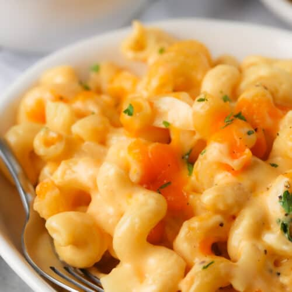

Old School Mac N' Cheese

Description
This is a completely unpretentious, down-home macaroni and cheese recipe just like my grandma and mom always made. A simple white sauce where you add cheese and a few other flavors with macaroni and a potato chip crust. This recipe makes a lot, I like to make two pans so I can take one to a pot luck and have the other one to keep in the fridge for later. It's an easy recipe to adjust down if you only want to make one pan. If you aren't cooking it right away, just keep the topping separate until you are ready to put it in the oven.
Ingredients
- 1 3/4 pounds cavatappi
- 3/4 cup butter
- 3/4 cup all-purpose flour
- 6 cups milk, divided
- 1 teaspoon mustard powder
- salt and ground pepper to taste
- 1 (8 ounce) package shredded Chedder cheese, divided
- 1 cup shredded Cheddar cheese
- butter-flavored cooking spray
Directions
- Prehead oven to 375 degrees F (190 degrees C)
- Bring a large pot of lightly salted water to a boil. Cook cavatappi in the boiling water, stirring occasionally until cooked through but firm to the bite, 8 minutes; drain.
- Melt butter in a large pot over medium-low heat. Slowly add flour to butter, whisking constantly; cook until brown and the mixture no longer smells of flour, about 5 minutes. Pour 1 cup milk into the flour mixture, whisking continually until fully incorporated, about 45 seconds; repeat twice. Add remaining 3 cups milk to the mixture, whisking to incorporate. Add the mustard powder; season with salt and black pepper.
- Reduce heat to low. Cook sauce, whisking frequently, until it begins to thicken, about 10 minutes. Add about half the package of shredded Cheddar cheese; stir continually until the cheese melts completely. Repeat with remaining half package of Cheddar cheese,about 4 ounces at a time. Once cheese is entirely incorporated, remove sauce from heat.
- Stir drained cavatappi into the cheese sauce to coat. Divide pasta between two 9x13-inch baking dishes.
- Top evenly with remaining shredded Cheddar cheese.
- Bake in preheated oven until the cheese is melted and slightly golden-brown. Approximately 30 minutes.
Back to Recipes